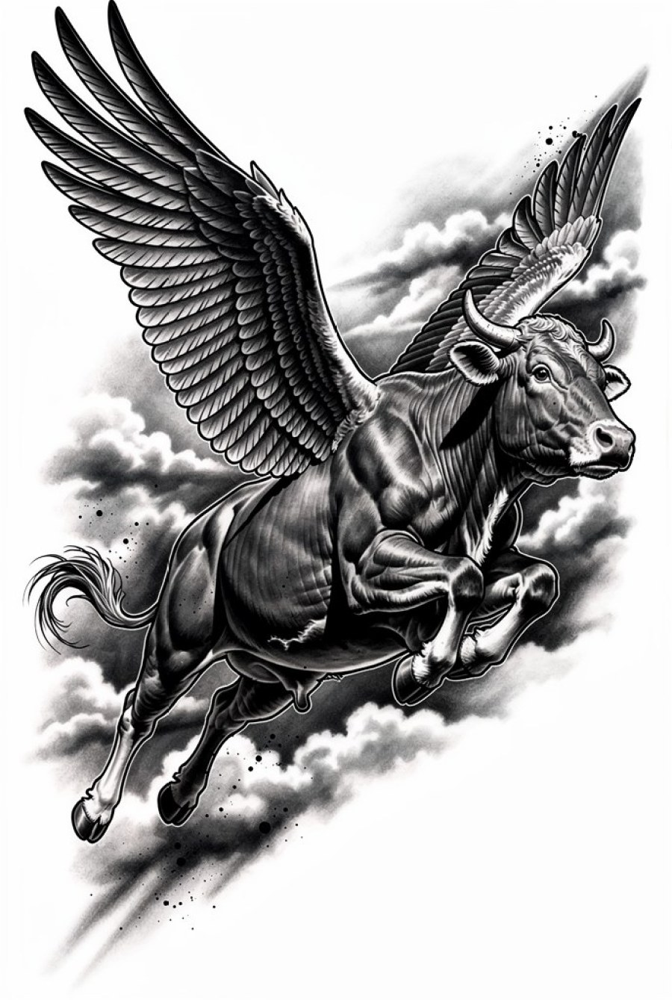
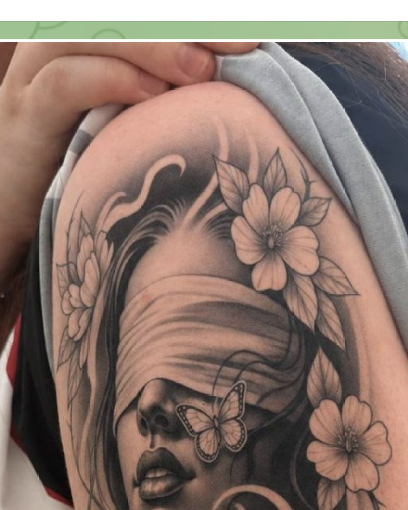
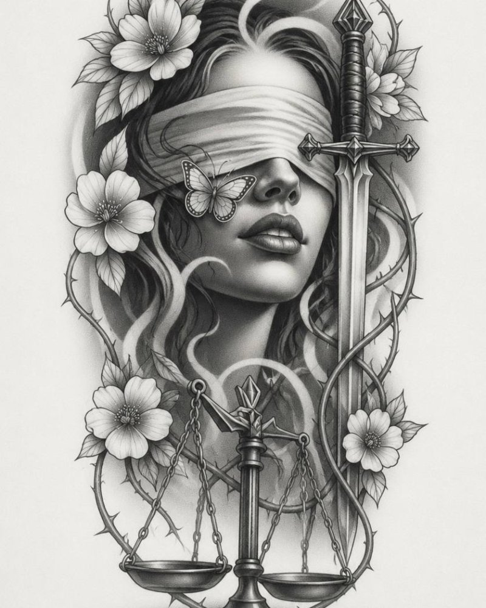
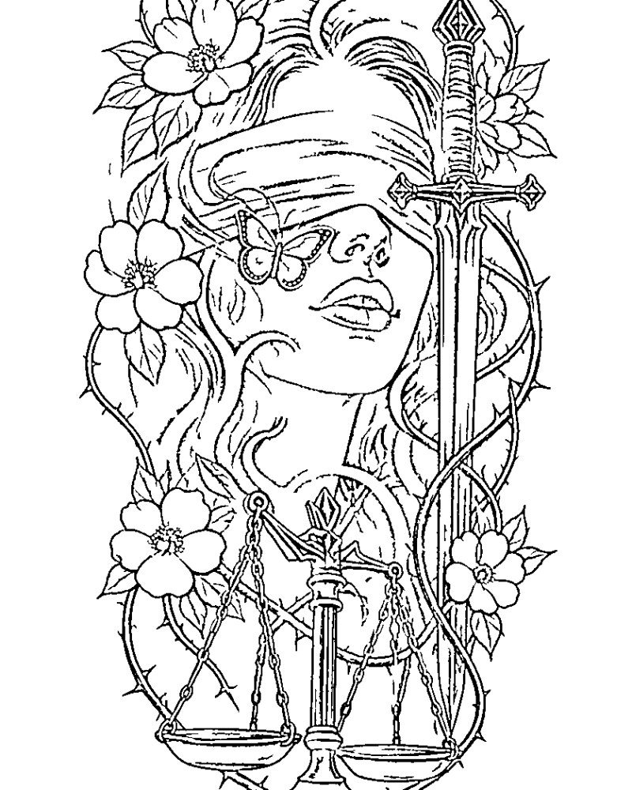
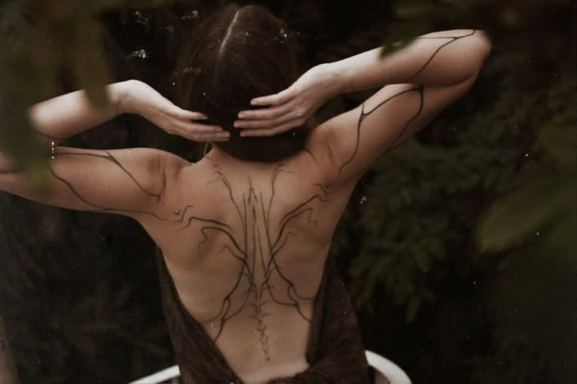

Нарисовать с нуля
Говоришь идею словами — получаешь эскиз в своём стиле.
Открыть →Send a client one link. They see the piece on their own skin and tap once to ask for a booking, while you are still tattooing someone else.
Free to try. Runs in Telegram on the phone you already use.

Pick yours. The tool list reorders to match.
From the first DM to the stencil on skin, without leaving the chat.
Show the shape before the pigment and keep healed shots portfolio-ready.
See the piece on your own skin before you sit in the chair.
Nothing here goes on skin without you. The tools give you something to react to at the consult and take the admin off your plate. The final drawing, the linework, the needle: yours, same as always.
Each one runs inside the chat and hands the file straight back.
Type it or say it out loud and get something to put in front of the client, in 27 styles from blackwork to fine line. It's a starting point for the consult, and you redraw it your way.
Open this toolPut the design on the client's own photo and the size argument ends in one message. No more explaining what eight inches looks like on a forearm.
Open this toolThe client opens it, tries the piece on themselves and taps once to ask for a booking. It keeps working while you're tattooing someone else.
Open this toolClean linework sized for transfer paper, straight from the design. No tracing at 11pm the night before a session.
Open this toolAn off-angle phone shot of a healed piece comes back as line art you can clean up and reuse, resize or rework for the next client.
Open this toolFive seconds where the drawing itself moves on skin. Your stories stop being the same three angles of the same photo.
Open this toolYellow light, phone camera, tired hands at the end of a session. It comes back looking like you shot it for the portfolio.
Open this toolYour design on the client's own arm, in a clip where they move and the tattoo holds still. That's the message people screenshot and forward.
Open this toolПресеты
Выбираешь ход — получаешь результат. Ничего не настраиваешь.
Говоришь идею словами — получаешь эскиз в своём стиле.
Открыть →Чистый контур из эскиза — сразу на термопринтер.
Открыть →
Эскиз ложится на фото — видно размер и посадку.
Открыть →
Чужая работа с кривого кадра — в ровный эскиз.
Открыть →
Свежая работа без красноты и бликов — в портфолио.
Открыть →Тату двигается на коже — такое останавливает ленту.
Открыть →Только у нас
Ты отправляешь одну ссылку. Дальше он справляется без тебя, а ты в это время работаешь.
Платишь ты, из своего тарифа. В каждом тарифе заложено количество примерок для твоих клиентов — им бесплатно, тебе предсказуемо.
Сколько это стоит времени
Это те же числа, по которым бот считает твою личную экономию в кабинете. Не витринные, а рабочие.
На потоке это складывается в десятки часов в месяц — кабинет показывает твою собственную сумму, а не среднюю по больнице.
Журнал

О своём почерке, о клиентах и о том, где машина помогает, а где мешает.
Читать →Пишем с мастерами, которые работают руками каждый день. Без рекламных интонаций.
One inquiry, start to finish.
They want a snake on the forearm and they want to see it first.
Describe it in a message or a voice note. A sketch comes back in the style you picked.
Send the try-on link. They upload a photo, see the piece on their skin and tap to ask for a booking.
Clean lines, ready for transfer paper.
One subscription covers every tool. Cancel from the same chat you started in.
For a light week of consults
For a full book
For a busy studio
Not an artist? Pay for what you use. One try-on, one animation, one sketch, no subscription and no card on file.
See client pricesRun one sketch, send one try-on link, watch what the client sends back. Ten minutes tells you whether this belongs in your week.
Open in TelegramFree to try. No app to install.